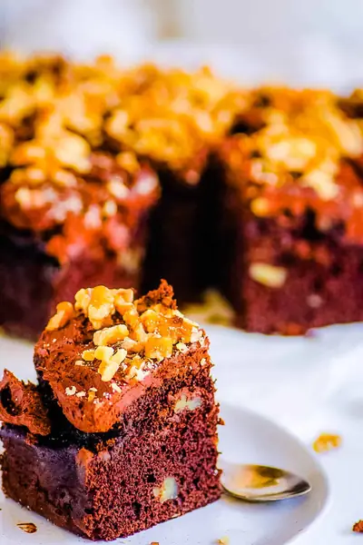

Chocolate Walnut Cake

Ingredients
- ¾ cup almond milk
- 1 tbsp lemon juice
- 1½ cups coconut sugar
- ½ tsp salt
- 1 tsp baking powder
- 1 tsp baking soda
- ⅔ cup cocoa powder
- 1¾ cup all-purpose flour
- 1½ tsp vanilla extract
- 2 eggs (room temperature)
- ½ cup chopped walnuts
- ½ cup boiling water
- 1 tsp dried instant coffee
- 12 ounces dark chocolate
- ½ cup heavy cream
- ½ cup chopped walnuts
Steps
- Preheat oven to 350 degrees F / 180 C. Line a 8x8 square baking dish with parchment paper and set aside.
- Whisk together the almond milk and lemon juice, set aside.
- In a separate mixing bowl, whisk the coconut sugar, salt, baking powder and soda, cocoa powder and flour until well combined.
- Add the vanilla extract and eggs to the almond milk mixture and whisk.
- Pour the wet ingredients into the dry ingredients along with ½ cup chopped walnuts and mix until combined.
- In a separate bowl mix the boiling water and instant coffee.
- Stir the coffee mixture into the cake batter and mix until incorporated.
- Pour the cake batter into the prepared tin and bake for 25-30 minutes or until an inserted skewer comes out clean.
- Allow to cool in the tin for 10 minutes before removing and cooling completely on a cooling rack.
- Prepare the chocolate ganache: Finely chop the dark chocolate and place into a heat proof bowl.
- Place the cream into the microwave and heat until steaming.
- Pour hot cream over the chocolate and stir until smooth. Place in the fridge for 30 minutes or until firm.
- Place the firm ganache into the bowl of a stand mixer and whip until fluffy.
- Spread the ganache on top of the cold cake and finish with crushed walnuts.
Recipe by Anjali Shah · The Picky Eater, from The Picky Eater. Saved here for personal use; the original has the full notes, tips and photos. Open original